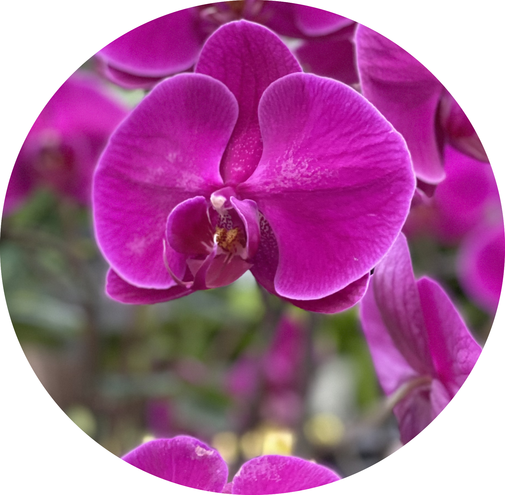

Nate
Favorite Drink: Water
History With House Plants: Vegetable Gardens and tropical plants. Loves long walks on the beach. All around great american. Grass fed free range organic kansin.
Adrian

Favorite Drink: Thai Tea
History With House Plants: Most are dead. The ones that aren't, wishes they were.